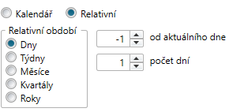
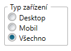

Timespent
Funkce timespent slouží k definování cílové skupiny na základě konzumace mediálního obsahu. Tuto cílovou skupinu lze pak použít v Kiwi v libovolné analýze (respondentů, časové, pořadové, ...). Její definice se zpřístupní v editoru cílových skupin při kliknutí dole na záložku Timespent.
Cílová skupina definovaná pomocí funkce timespent obsahuje respondenty, kteří splnili podmínku minimální doby konzumace vybraných médií v průměrném dni a navíc měřili (byli v datech součástí panelu) alespoň 70 % dní z vybraného období. Průměrná doba konzumace médií každého respondenta se počítá pouze ze dnů, kdy byl respondent v datech. Podmínka měření 70 % dní je zvolená kvůli tomu, abychom zohledňovali pouze respondenty, kteří jsou většinu dní v období součástí měření.

Timespent se skládá ze 4 základních parametrů (viz obrázek):
- Média - v levé části lze vybrat média či celé médiatypy, pro které výraz timespent definujeme.
- Časová podmínka - v pravé části nahoře lze definovat časovou podmínku, kterou musí respondenti splnit pro zařazení do cílové skupiny. Vybírá se pomocí operátoru <, >, = a času v sekundách nebo minutách.
- Období - za jaké období timespent definujeme. Lze vybírat z kalendáře nebo je možné formulovat také pomocí relativního období, kde si uživatel vybere typ, posun a periodicitu období relativně vůči datu výpočtu. 
- Vybraná část dne - v pravé části dole lze omezit část dne, pro kterou budeme konzumaci daných médií počítat. Může sloužit např. k vymezení diváků či posluchačů konkrétního pořadu. Ve výchozím stavu vybraná část dne pokrývá celý programový den.
Nahoře v popisku Velikost cílové skupiny je možné zkontrolovat, kolik respondentů splňuje aktuální definici timespent výrazu pro poslední datum v datech.
Pokročilé nastavení
- Časová hodnota Nezadáno - v tomto případě splní podmínku timespent respondenti, kteří neměří (nejsou v datech) 70 % dní vybraného období.
- Volba Média jednotlivě - v případě výběru více médií se při kliknutí na šipku vytvoří více timespent cílových skupin pro každé vybrané médium.
- Volba Rozdělit časové úseky - podobně jako u předchozí volby se při kliknutí na šipku vygeneruje více timespent cílových skupin pro rozdělené období podle zvoleného intervalu.
- Typ zařízení - pro internetová média lze při definici výrazu timespent vybrat, z jakého zařízení se budou časové úseky počítat. Ve výchozím stavu jsou vybrané všechny typy zařízení. 
Příklady a poznámky
- Pokud respondent sledoval televizní kanál jeden den 2 hodiny a zbytek měsíce ne (ale byl součástí panelu), tak splní podmínku timespent na 3 minuty, protože průměrný den sledoval: 120 minut / 30 dní = 4 minuty.
- Pokud respondent poslouchal rádiovou stanici každý druhý den 5 minut (a byl součástí dat každý den), tak nesplní podmínku timespent na 3 minuty, protože průměrný den poslouchal pouze 2,5 minuty.
- Pokud respondent navštěvoval internetovou stránku každý den 10 minut v prvních 15 dnech v měsíci, ale v druhých 15 dnech v měsíci nebyl součástí dat, tak nesplní podmínku timespent na 3 minuty, protože sice má průměrnou dobu návštěvy internetové stránky 10 minut, ale byl součástí panelu pouze 50 % dní.